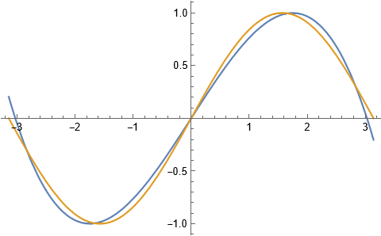
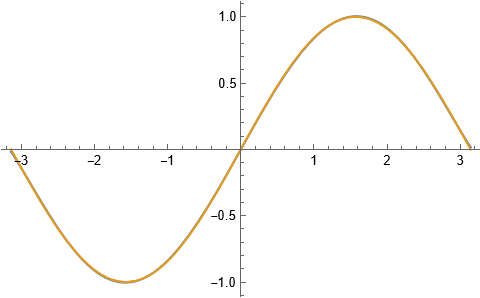
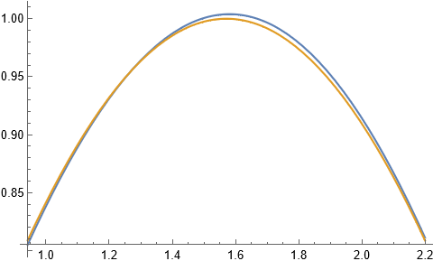

球谐函数 - 01 函数拟合
计算机应用常常需要使用简单函数的线性组合来拟合某个复杂函数。例如，在游戏开发中，为了实现某些渲染效果，通常会在shader中使用到正弦函数。但是，由于GPU计算正弦函数的指令数较多，性能开销比较高，开发者通常会考虑使用多项式函数$x^{n}$的线性组合来拟合正弦函数，从而减少计算指令数，提高渲染性能。
假设我们需要计算正弦函数$f(x) = \sin(x)$在区间$\lbrack - \pi,\pi\rbrack$上的值。为了减少性能开销，我们考虑使用多项式函数$x^{n}$的线性组合来逼近函数$\sin(x)$，如[approxsin]{.ref}
所示。
$$\overset{\sim}{f}(x) = \sum_{i = 0}^{n}c_{i}x^{i}$$
线性组合系数$c_{i}$的取值应该使得函数$f(x)$与$\overset{\sim}{f}(x)$之间的误差最小。因此，我们先定义误差函数$g(x)$，然后求得误差函数$g(x)$的最小值点，即可以得到线性组合系数$c_{i}$。
$$g(x) = \int_{- 2\pi}^{2\pi}\left( f(x) - \overset{\sim}{f}(x) \right)^{2}$$
由于函数$g(x)$的最小值点必定在极小值点取得，因此求函数$g(x)$的最小值点的一种方法是，求$g(x)$的导数为0的点。另外，我们还可以使用其他方法来求解系数$c_{i}$，该方法称为
最小二乘投影，这是后面重点介绍的方法。
对于函数$\sin(x)$，我们可以使用多项式函数$P_{i}(x)$的线性组合来拟合，其中$P_{i}(x)$的定义如公式所示。
$$\begin{cases}
P_{0}(x) = \frac{1}{\sqrt{2\pi}} \
P_{1}(x) = \frac{\sqrt{\frac{3}{2}}x}{\pi^{\frac{3}{2}}} \
P_{2}(x) = \frac{3\sqrt{\frac{5}{2}}\left( x^{2} - \frac{\pi^{2}}{3} \right)}{2\pi^{\frac{5}{2}}} \
P_{3}(x) = \frac{5\sqrt{\frac{7}{2}}\left( x^{3} - \frac{3\pi^{2}x}{5} \right)}{2\pi^{\frac{7}{2}}} \
\vdots
\end{cases}$$
所有在区间$\lbrack - \pi,\pi\rbrack$上有定义的一元连续函数能够构成函数空间$L(R)$，而函数$P_{i}(x)$是该函数空间中的基函数。这意味着函数空间$L(R)$中的任意函数，都可以使用基函数$P_{i}(x)$的线性组合来表示，即
$$\sin(x) = \sum_{i = 0}^{\infty}c_{i}P_{i}(x)$$
虽然函数$\sin(x)$需要使用无穷项基函数$P_{i}(x)$的线性组合来表示，但是实际上，我们取基函数的前$n$项也能够很好地来拟合函数$\sin(x)$。为了方便起见，我们取前$4$项基函数$P_{i}(x)$的线性组合来进行拟合，可以表示为：
$$\sin(x) \approx \overset{\sim}{f}(x) = \sum_{i = 0}^{3}c_{i}P_{i}(x)$$
另外，由于函数空间的基函数会满足正交性质，则函数$P_{i}(x)$应该满足性质：
$$\int_{- \pi}^{\pi}P_{i}(x)P_{j}(x)dx = \delta_{i,j}$$
其中$\delta_{i,j}$的定义如下：
$$\delta_{i,j} = \begin{cases}
1\quad\text{ if }i \neq j \
0\quad\text{ if }i = j
\end{cases}$$
基于多项式函数$P_{i}(x)$的正交性，我们可以通过以下公式求得线性组合系数$c_{i}$：
$$c_{i} = \int_{- \pi}^{\pi}\sin(x)P_{i}(x)dx$$ [] { #coefficient }
[coefficient]{.ref} 的证明如下： $$\begin{aligned}
c_{i} & = \int_{- \pi}^{\pi}\sin(x)P_{i}(x)dx \
& = \int_{\pi}^{\pi}\left( \sum_{k = 0}^{\infty}c_{k}P_{k}(x) \right)P_{i}(x)dx \
& = \int_{\pi}^{\pi}\sum_{k = 0}^{\infty}\left( c_{k}P_{k}(x)P_{i}(x) \right)dx \
& = c_{i}\int_{\pi}^{\pi}P_{i}^{2}(x)dx \
& = c_{i}
\end{aligned}$$
通过 [coefficient]{.ref}
，我们可以得到函数$\overset{\sim}{f}(x)$中的系数如下：
$$c_{0} = 1,c_{1} = 0,c_{2} = \sqrt{\frac{6}{\pi}},c_{3} = 0$$
带入到
[approx-eq]{.ref}，可以得到函数$\overset{\sim}{f}(x)$的公式如下：
$$\begin{aligned}
\overset{\sim}{f}(x) & = \left( \frac{315}{2\pi^{4}} - \frac{15}{2\pi^{2}} \right)x + \left( \frac{35}{2} - \frac{525}{2\pi^{6}} \right)x^{3} \
& \approx 0.856983x - 0.0933877x^{3}
\end{aligned}$$
[img-sin-fitting-4]{.ref}是函数$\sin(x)$与$\overset{\sim}{f}(x)$在区间$\lbrack - \pi,\pi\rbrack$的图像，其中黄色曲线为函数$\sin(x)$，绿色曲线为函数$\overset{\sim}{f}(x)$。可以看到，函数$\overset{\sim}{f}(x)$能够较好地拟合函数$\sin(x)$。

正弦函数拟合 - 4项
事实上，通过增加多项式函数$P_{i}(x)$的数量，我们可以不断地提高函数$\overset{\sim}{f}(x)$对函数$f(x)$的拟合程度。当多项式的数量是$6$个时，即函数$\overset{\sim}{f}(x) = \sum_{i = 0}^{5}c_{i}P_{i}(x)$时，函数图像如
[img-sin-fitting-6-term]{.ref}
所示。从图像可以看出，函数$\sin(x)$与$\overset{\sim}{f}(x)$的曲线几乎一致。我们取
[img-sin-fitting-6-term]{.ref}
中的局部区间$\left\lbrack \frac{3\pi}{10},\frac{7\pi}{10} \right\rbrack$，如
[img-sin-fitting-6-term-local]{.ref}
所示，可以看到函数$\sin(x)$与$\overset{\sim}{f}(x)$的曲线误差也很小。事实上，通过增加多项式函数$P_{i}(x)$的数量，我们可以不断地提高函数$\overset{\sim}{f}(x)$对函数$f(x)$的拟合程度。当多项式的数量是$6$个时，即函数$\overset{\sim}{f}(x) = \sum_{i = 0}^{5}c_{i}P_{i}(x)$时，函数图像如
[img-sin-fitting-6-term]{.ref}

正弦函数拟合 - 6项
当函数$\overset{\sim}{f}(x)$中多项式函数$P_{i}(x)$的项数趋于无穷时，其极限为$\sin(x)$，能够完美地拟合函数$\sin(x)$。

正弦函数拟合(局部) - 6项